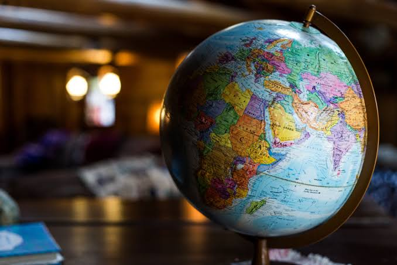

A student once looked at a satellite image and wondered how people could map entire cities, monitor climate change, and predict environmental risks from space. That curiosity led the student to Geography. Today, Geography combines science, technology, environmental studies, and spatial analysis to solve real-world problems.
Geography is the study of the Earth, its environments, natural systems, resources, and the relationship between people and their surroundings. In General Science, Geography helps students understand environmental processes and the scientific management of resources.
As an SHS student, you may study topics such as:
Geography can lead to careers such as:
Many students think Geography is only about maps. In reality, modern Geography powers technologies such as GPS navigation, drone mapping, satellite monitoring, GIS, environmental planning, and climate analysis. It is one of the fastest-growing fields connecting science and technology.
If you are interested in GIS, spatial technology, environmental science, climate studies, urban planning, or development work, Geography can open exciting opportunities both in Ghana and internationally.
This is only a small introduction. If you want to understand how programmes connect to university courses, careers, opportunities, and future success, get a copy of:
The guide designed to help students make informed decisions about their future and discover opportunities they may never have considered.